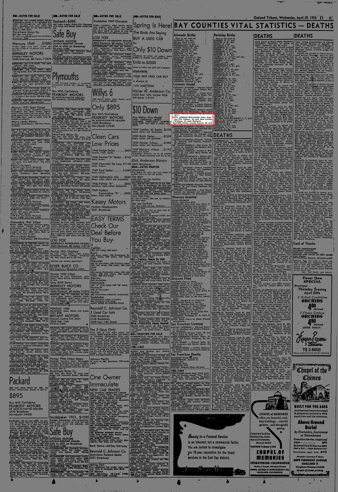
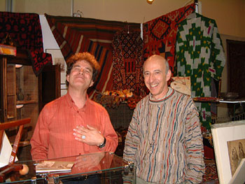

Jane W. b. 1934
Wife of John Grattan Fitz Gibbon Sr., grandfather of Genevieve Elisa Symanski Nelson (wife of Peter).
Living. As for every living relative on this site, the birth date is given by year only, and no current address is shown.
Also recorded as Jane Lucille Williams; Jane L Williams.
Jane W. was born in 1934 (according to the family's 2015 tree)3. She married John Grattan Fitz Gibbon Sr. on 28 Apr 1953 in California, United States2.
Family
- Husband
- John Grattan Fitz Gibbon Sr. b. 1934 · married on 28 Apr 1953 in California, United States2
- Children
- Sarah Pinkerton (Pinkie) Fitz Gibbon b. 1960 documented
- John G. Fitz Gibbon Jr. b. 1955 documented
- Katherine J. Fitz Gibbon b. 1954 tradition
Life events
| Event | Date | Place and details |
|---|---|---|
| Born | 1934 | According to the family's 2015 tree3 |
| Married | 28 Apr 1953 | with John Grattan Fitz Gibbon Sr. California, United States2 |
Records


Sources
- Marriage Licenses: Fitz Gibbon-Williams, Oakland Tribune (Oakland, California), 29 April 1953, p. 63.
FTT*i GIBBON-WILLIAMS—John Grattan Fitz Gibbon. 18. and Jane Lucille William*. 18. both Berkeley.
Translation: FITZ GIBBON-WILLIAMS—John Grattan Fitz Gibbon, 18, and Jane Lucille Williams, 18, both Berkeley.
Full maiden name revealed as Jane Lucille Williams (age 18, residing in Berkeley, California) in her 29 April 1953 Alameda County marriage license with John Grattan Fitz Gibbon, 18, of Berkeley.
- Marriage of John G Fitzgibbon and Jane L Williams, 28 Apr 1953, Monterey, California.
Name: John G Fitzgibbon | Gender: Male | Estimated Birth Year: abt 1935 [abt 1935] | Age: 18 | Marriage Date: 28 Apr 1953 | Marriage Place: Monterey, California, USA | Spouse: Jane L Williams | Spouse Age: 18
Jane L. Williams (born abt 1935; married John Grattan Fitz Gibbon on 28 Apr 1953 in Monterey County, CA)
- Peter's tree, danenberg.sql, 2007–2015, personae 77, birth.